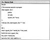

|
Algorithms and Data Structures in C++
by Alan Parker
CRC Press, CRC Press LLC
ISBN: 0849371716 Pub Date: 08/01/93
|
The program starts with the array and perturbs it by replacing it with a neighboring array and evaluating the cost of the string. The calculate_cost() function calculates the cost of a given array.
To calculate a neighboring array the algorithm selects a random strategy. This is a required aspect to simulated annealing. The neighboring strategy must be random. The strategy is described in Table 3.3.
Table 3.3 Neighbor Solution Strategy
| Operation
| Description
|
| A_op_to_op_A()
| Swap an operation with an element. For instance replace 10 + with + 10.
|
| op_A_to_A_op()
| Swap an operation with an element. For instance replace + 10 with 10 +.
|
| AB_to_BA
| Exchange two elements. For instance replace 4 5 + to 5 4 +.
|
| switch_op()
| switch two operators in the sequence. For instance replace 4 5 * + with 4 5 + *.
|
| ABC_op_to_AB_op_C()
| replace a sequence of three elements followed by an operation to two elements followed by the operation followed by the last element. For instance replace 2 4 3 5 + 6 with 2 4 3 + 5 6.
Notice this is similar to A_op_to_op_A().
|
There are certain representations which are not valid that are handled by the program. For instance
3 4 * 5 +
cannot be replaced with
3 * 4 5 +
because you need two elements for each operation you run into. In general at any point in the array the number of elements to that point must exceed the number of operations to that point by 1. The program ensures that only valid perturbations are considered.
The output of the program is shown in Code List 3.37. The program found an optimal solution. Since the program is a random program it may not find the optimal solution each time. The program also doesn’t output the square number but rather the size of the size. This increases the readability of the solution. The solution to the problem is not unique.
Code List 3.36 Simulated Annealing

Code List 3.37 Output of Program in Code LIST 3.36

Figure 3.10 Generic Simulated Annealing Algorithm
Figure 3.11 A Given Instance of the Square Packing Problem
Figure 3.12 Hill Climbing Analogy
3.12 Problems
- (3.1) [Pointers, Dynamic Memory Allocation] Write a C++ program to invert a 30 matrix with floating point elements. Your program should only declare triple pointers in main(). Every declaration in main() must be of the form: type * * * variable. This also applies to any loop variables needed. No other variables outside of main() should be declared (you can use classes outside of main()). Any memory allocated with new should be removed with delete. Input the matrix using the cin operator and output the results using the cout operator. If the matrix is not invertible you should print “Matrix not Invertible”.
- (3.2) [Dynamic Memory Allocation, FIFO] Write a C++ program to implement a FIFO stack which allocates space dynamically. The size of the stack should increase dynamically (via new) with each push operation and decrease (via delete) with each pop operation. Support an operation to print the data presently on the stack.
- (3.3) [Linked Lists] Write a C++ program to maintain a linked lists of strings. The program should support an operation to count the number of entries in the linked list which match a specific string.
- (3.4) [Linked Lists, Sorting] Write an operation for the program in Problem 3.3 which will sort the linked list in alphabetical order.
- (3.5) [Linked Lists] Write a general linked list C++ program which supports operations to
- • Combine two lists
- • Copy a list.
- • Split a list at a specific location into two lists
Make sure you handle all the special cases associated with the start and end of a list.
- (3.6) [Bounding] Modify the coffee house game program to find a solution where the triangle dimension is 15. The program should use a bounding technique which results in unique intermediate peg locations at each iteration.
- (3.7) [Merging Sorted Linked Lists] Write a C++ program to merge two separate sorted lists into one sorted list. Calculate the order of your algorithm in terms of the size of the input list, n.
- (3.8) [Binary Trees] Write a C++ program which is passed a pointer to a binary tree and prints out the keys traversed via preorder, postorder and inorder strategies. Assume your tree class is defined as
class tree
{
public:
int key;
tree * left;
tree * right;
}
- (3.9) [Balanced Trees] Write a C++ program which inserts an element anywhere into a balanced tree and results in a tree structure which is still balanced. Assume your tree class is the one defined in Problem 3.8.
- (3.10) [Balanced Trees] Write a C++ program which deletes an element with a specific key from a balanced tree and results in a tree structure which is still balanced. Assume your tree class is the one defined in Problem 3.8.
- (3.11) [Balanced Trees] Write a C++ program which maintains a sorted key list in a balanced binary tree. You should Support insertion and deletion of elements in the tree. For this problem the definition of sorted means that at each node in the tree every element in the left subtree is less than or equal to the root key of the subtree and every element in the right subtree is greater than or equal to the root key of the subtree. After insertions and deletions the tree should be balanced. Assume your tree class is the one defined in Problem 3.8.
- (3.12) [Order] Calculate the number of operations in terms of the size of the tree for the performance of the algorithm in Problem 3.10.
- (3.13) [Hashing — Difficult] Consider a linked list structure which supports the concept of an element with a number of friends:
class element
{
public:
char data[100];
element * f1;
element * f2;
element * f3;
}
Consider a number of strings, say 2000, to be placed in classes of this nature. Develop a hashing algorithm which will use the fact that an element has three friends to determine the location of the string given only a pointer to a root element. Support the hashing functions to search and insert strings into the table. Try to characterize your data which would make your hashing algorithm optimal.
- (3.14) [QuickSort] Investigate different key selection strategies for the quicksort algorithm. Test out at least five different strategies and use large lists of random data as your performance benchmark. Compare each strategy and rate the strategies in terms of their performance.
- (3.15) [Simulated Annealing] Modify Code List 3.36 to use simulated annealing to pack a number of rectangles into a rectangle with smallest area. Support the option to pack rectangles into a square with smallest area.
)
){kind=link}
){kind=link}
){kind=link}
){kind=link}
){kind=link}
){kind=link}
){kind=link}
){kind=link}
){kind=link}
){kind=link}
){kind=link}
){kind=link}
){kind=link}
){kind=link}
){kind=link}
){kind=link}
){kind=link}
){kind=link}